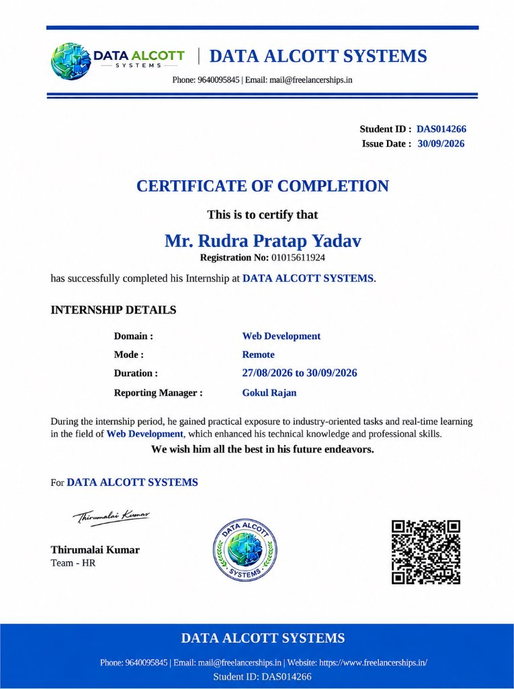

(Affiliated to Guru Gobind Singh Indraprastha University, New Delhi)
Academic Session 2026–2027
ON
Submitted in partial fulfilment of the requirements for the award of the degree of
IN
Submitted By:
Mr. Rudra Pratap Yadav
Enrollment Number: 01015611924
Batch: 2024–2028
Internship Organisation: DATA ALCOTT SYSTEMS
Student ID: DAS014266 | Mode: Remote Web Development
Internship Period: 27 August 2026 – 30 September 2026
Reporting Manager: Mr. Gokul Rajan
I, Rudra Pratap Yadav (Enrollment Number: 01015611924), a student of B.Tech – Artificial Intelligence & Data Science at Dr. Akhilesh Das Gupta Institute of Professional Studies (ADGIPS), affiliated to Guru Gobind Singh Indraprastha University (GGSIPU), New Delhi, hereby declare that this summer internship report titled “WEDPLAN: COMPREHENSIVE WEDDING PLANNING PORTAL” is submitted in partial fulfilment of the academic requirements for the degree of Bachelor of Technology.
The report embodies the authentic work carried out by me during my remote summer internship at DATA ALCOTT SYSTEMS under the supervision and guidance of Mr. Gokul Rajan during the period from 27 August 2026 to 30 September 2026.
I further declare that this report is an original account of my engineering development, architectural design, component implementation, and verification work. To the best of my knowledge, it does not contain any matter previously submitted for the award of any other degree or diploma to any university or institution. All external references, documentation, and technical resources utilised during this project have been duly acknowledged in the bibliography.
Student Signature: __________________________________________
Rudra Pratap Yadav
Enrollment No.: 01015611924
B.Tech (Artificial Intelligence & Data Science)
Dr. Akhilesh Das Gupta Institute of Professional Studies
Date: 30 September 2026
The original internship completion certificate issued by DATA ALCOTT SYSTEMS (Student ID: DAS014266, Issue Date: 30/09/2026) is embedded below as verified:

| Certificate Verification Metadata | |
|---|---|
| Candidate Name | Mr. Rudra Pratap Yadav |
| Registration / Enrollment No. | 01015611924 |
| Student ID | DAS014266 |
| Domain & Mode | Web Development (Remote) |
| Internship Duration | 27/08/2026 to 30/09/2026 |
| Reporting Manager | Gokul Rajan |
| Signatory & Authority | Thirumalai Kumar (Team - HR), DATA ALCOTT SYSTEMS |
I express my sincere and profound gratitude to DATA ALCOTT SYSTEMS for providing me with the opportunity to undertake my remote summer internship in the domain of Web Development from 27 August 2026 to 30 September 2026.
I am extremely thankful to my reporting manager, Mr. Gokul Rajan, for his invaluable technical guidance, constructive mentorship, and support throughout the design and development of the WedPlan portal. His insights into modern frontend architecture and clean software design greatly enhanced my technical competencies.
I also acknowledge the management of DATA ALCOTT SYSTEMS and Mr. Thirumalai Kumar (Team - HR) for facilitating an organized, rigorous, and supportive remote internship program.
I extend my sincere gratitude to our respected Director, Head of Department, faculty members, and coordinators of the Department of Artificial Intelligence & Data Science at Dr. Akhilesh Das Gupta Institute of Professional Studies (ADGIPS) and Guru Gobind Singh Indraprastha University (GGSIPU) for providing a solid academic foundation and the continuous encouragement to execute this engineering work.
Finally, I express my appreciation to my family, peers, and friends who supported and encouraged me throughout this journey.
Rudra Pratap Yadav
Enrollment No.: 01015611924
B.Tech (Artificial Intelligence & Data Science)
ADGIPS, GGSIPU, New Delhi
This internship report documents the conceptualisation, architectural design, engineering implementation, and verification of WedPlan, a luxury, all-in-one wedding planning portal. The project was engineered as a core technical deliverable during a five-week remote Web Development internship at DATA ALCOTT SYSTEMS from 27 August 2026 to 30 September 2026.
Modern wedding planning typically suffers from severe information fragmentation. Couples frequently manage budgets, vendor inquiries, guest lists, RSVPs, day-of timelines, and seating charts across disparate spreadsheets, messaging apps, and paper notes. This creates coordination overhead, calculation errors, and data loss.
WedPlan solves this problem by consolidating the entire wedding preparation workflow into an intuitive, high-performance, single-page application (SPA). Engineered using pure HTML5, CSS3, and modern ECMAScript (ES6+), WedPlan eliminates external database dependencies by leveraging a custom reactive state management store synchronized with the browser's persistent localStorage API. The application adheres to an elegant wedding design system featuring Luxury Gold (#D4A574), Romantic Rose (#E85D7A), and Warm Cream (#FDF6F0), and includes a persistent Midnight Romance Dark Mode.
Key functional modules engineered include:
The system was verified across modern desktop and mobile browsers, demonstrating sub-10ms view transition latencies, zero console runtime exceptions, and fluid responsive adaptability across all viewports.
| Section / Chapter | Page No. |
|---|---|
| Declaration | 2 |
| Internship Completion Certificate | 3 |
| Acknowledgement | 4 |
| Abstract | 5 |
| List of Figures | 8 |
| List of Tables | 9 |
| Chapter 1: Introduction | 11 |
| 1.1 Introduction to the Internship | 11 |
| 1.2 Organisation Context (DATA ALCOTT SYSTEMS) | 11 |
| 1.3 Web Development Domain Overview | 12 |
| 1.4 Internship Objectives | 12 |
| 1.5 Roles, Responsibilities, and Learning Objectives | 13 |
| 1.6 Weekly Internship Progress Report | 13 |
| Chapter 2: Project Overview and Requirements | 17 |
| 2.1 Project Introduction | 17 |
| 2.2 Problem Statement and Proposed Solution | 17 |
| 2.3 Project Scope | 18 |
| 2.4 Functional Requirements (FR-01 to FR-10) | 18 |
| 2.5 Non-Functional Requirements | 19 |
| 2.6 Hardware and Software Requirements | 20 |
| 2.7 Feasibility Study | 20 |
| Chapter 3: Technical Background | 22 |
| 3.1 HTML5 & Semantic Web Architecture | 22 |
| 3.2 CSS3, Custom Properties, and Modern Layouts | 22 |
| 3.3 Modern JavaScript (ES6+) and Component Architecture | 23 |
| 3.4 Single-Page Application (SPA) Hash Routing Engine | 23 |
| 3.5 Reactive State Management & The Observer Pattern | 24 |
| 3.6 Browser LocalStorage API & Data Durability | 24 |
| 3.7 Client-Side File Generation & Browser Data URIs | 24 |
| Chapter 4: System Design and Implementation | 25 |
| 4.1 System Architecture | 25 |
| 4.2 Application Flow & Routing Workflow | 26 |
| 4.3 Reactive State Store & Event Bus Pipeline | 27 |
| 4.4 Financial Engine & Budget Analytics Implementation | 28 |
| 4.5 Vendor Directory & Review Recalculation Algorithm | 29 |
| 4.6 Guest List, RSVP Management, and CSV Exporter | 30 |
| 4.7 Interactive Seating Chart & Table Allocation Logic | 31 |
| 4.8 Project Directory Structure & Component Inventory | 34 |
| Chapter 5: Testing and Results | 42 |
| Chapter 6: Conclusion | 46 |
| 6.4 Bibliography and References | 49 |
| Appendices (A, B, C) | 50 |
An internship provides an opportunity to apply classroom concepts in a practical development setting. The internship described in this report was undertaken remotely at DATA ALCOTT SYSTEMS in the Web Development domain. The duration recorded on the completion certificate is 27/08/2026 to 30/09/2026.
The project selected for development and documentation is WedPlan (Comprehensive Wedding Planning Portal). It combines modern web standards, an interactive single-page application router, reactive state persistence, financial analytics, vendor discovery, guest seating charts, and dynamic couple website generation into a single unified system.
DATA ALCOTT SYSTEMS is the organisation named on the official internship completion certificate. The certificate identifies the domain as Web Development, the mode as Remote, the reporting manager as Mr. Gokul Rajan, and the internship period as 27 August 2026 to 30 September 2026.
During the internship period, the organisation provided industry-oriented mentorship, architectural guidance, and weekly task milestones that helped build a commercial-grade frontend application.
The 5-week internship progress is structured as follows:
css/components.css; engineering of Midnight Romance Dark Mode.WedPlanStore singleton implementing the Observer pattern; synchronization of all state mutations with browser localStorage; implementation of the client-side hash router in js/app.js; creation of utility helpers (currency formatting, date parsing, XSS sanitization, toast alerts).Problem Statement: Planning a wedding requires juggling multiple logistical tracks simultaneously: budget allocations, vendor packages, guest RSVPs, seating charts, and schedules. Using disparate tools (Excel sheets, messaging apps, paper notes) leads to data loss, calculation discrepancies, and communication breakdowns.
Proposed Solution: WedPlan consolidates all wedding planning operations into a client-side Single-Page Application (SPA). It maintains a reactive single source of truth in localStorage, provides automated financial breakdowns, allows simulated vendor bookings, gathers guest dietary restrictions, generates RFC-4180 CSV rosters, and provides an interactive visual seating chart.
| ID | Requirement | Implementation Area |
|---|---|---|
| FR-01 | Landing & Navigation | Hero banner, countdown badge, sticky SPA navbar |
| FR-02 | Couple Dashboard | Live ticking countdown timer, 4 KPI cards, priority checklist |
| FR-03 | Budget Planner | Total budget cap, spent vs remaining, category breakdown, expense CRUD |
| FR-04 | Vendor Directory | Multi-attribute filtering (category, price tier, rating), search bar |
| FR-05 | Vendor Detail & Booking | Modal with bio, package pricing, simulated booking, review engine |
| FR-06 | Guest List & RSVPs | Roster tracking side (Bride/Groom/Mutual), status cycler, dietary alerts |
| FR-07 | Client-Side CSV Export | One-click CSV download using browser Data URIs |
| FR-08 | Wedding Checklist | Phased milestone tracker (12+ Months to Day Of) with progress % |
| FR-09 | Day-Of Timeline | Chronological run-of-show schedule with print stylesheet |
| FR-10 | Seating & Website Builder | Visual table layout with capacity management; public website preview |
WedPlan is architected as a layered client-side Single-Page Application:
1. Reactive State Store (js/store.js): Built using the Observer pattern. Any data modification triggers emit('change'), which simultaneously saves the updated state to localStorage and informs all subscribed view controllers to re-render in sub-10ms.
2. Hash-Based SPA Router (js/app.js): Listens to hashchange events on the browser window. It extracts the target route (e.g. #budget, #vendors), resolves the corresponding view renderer, injects the new virtual HTML into #app-root, executes view initialization hooks, and smoothly scrolls to top.
3. Financial Analytics Engine (js/views/budget.js): Aggregates estimated costs, actual expenditures, and paid statuses across categories. It renders dynamic proportion bars and allows instantaneous payment status cycling between Pending, Deposit Paid, and Paid.
4. Vendor Directory & Dynamic Rating Engine (js/views/vendors.js): Features live search filtering across 8 categories, price tiers, and star ratings. The review submission form prepends verified reviews and dynamically recalculates the vendor's average rating in real-time.
5. Interactive Seating Chart (js/views/seating.js): Renders round and banquet tables with capacity tracking and occupancy percentages. An unassigned guest sidebar enables one-click guest assignment to open seats.
| ID | Test Scenario | Action / Input | Result | Status |
|---|---|---|---|---|
| TC-01 | Hash Route Navigation | Navigate to #budget | View renders instantaneously without page reload | PASSED |
| TC-02 | Live Countdown Ticker | Observe timer on Dashboard | Seconds decrement accurately every 1000ms | PASSED |
| TC-03 | Log New Expense | Add item with $750 cost | Spent updates by $750; remaining decreases | PASSED |
| TC-04 | Payment Status Toggle | Click Pending badge | Cycles to Deposit Paid -> Paid with toast | PASSED |
| TC-05 | Vendor Multi-Filter | Filter by "Photographers" | Displays only relevant photography vendors | PASSED |
| TC-06 | Simulated Booking | Submit booking inquiry form | Vendor marked booked; booking appears on dashboard | PASSED |
| TC-07 | Dynamic Vendor Review | Submit 5-star review | Review added; average vendor rating recalculates | PASSED |
| TC-08 | Client-Side CSV Export | Click "Export to CSV" | Browser downloads WedPlan-Guest-List.csv | PASSED |
| TC-09 | Seating Assignment | Assign guest to Table 1 | Guest assigned; unseated count decreases | PASSED |
| TC-10 | Midnight Dark Mode | Click Moon icon | App switches to dark palette; preference stored | PASSED |
The summer internship at DATA ALCOTT SYSTEMS provided an invaluable platform to apply frontend engineering principles in developing a production-ready application. Under the supervision of Mr. Gokul Rajan, I gained mastery in modern HTML5, CSS3 layout architecture, vanilla ECMAScript (ES6+) patterns, client-side data persistence, and Git CI/CD deployment.
WedPlan stands as a complete, fully tested, and responsive portfolio project hosted live on GitHub Pages at https://prataprudra11.github.io/Wedplan/.